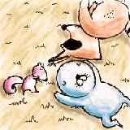
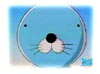
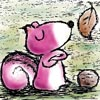
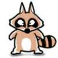
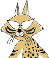

보노보노

1996년 이가라시 미키오씨가 그린 만화책이 1994년 극장판 에니메이션 제작,
1995년4월~1996년 3월까지 '테레비도쿄' 계열에서 매주 목요일 오후 7시 방영,
비디오로 발매 되었엇습니다.
한국에서는 서울문화사에서 간행한 <보노보노>한국어판 만화책이 있구요.
투니버스에 방영되었었던 작품입니다.
| 
|
ぼのぼの(보노보노) 수달,혹은 해달
이 만화의 주인공. 육지로 올라온
수달의 자식. 멍청하지만 솔직함.
바로 이점이 너부리를 화나게 화나게 합니다.
| 
|
シマリスくん(시마리스 군 - 포로리) 다람쥐
남자인 주제에 여자말투로 말하는건 여자만
있는 가정에 태어난 비극일까?
이 점 때메 너부리한테 맞고 있습니다.
국내에니에서는 아이들 정서상 안좋다고 여겼는지
여자로 표현됬습니다.
자기보다 작은것은 아무렇게나 대해도 된다고
생각하고 있습니다.
| 
|
アライグマくん(아라이구마 군 - 너부리) 너구리
애들 괴롭히기가 취미이지만, 본성이 악하지
않은듯 늘 발벗고 보노보노의 고민 해결을 위해
고군분투 해줍니다.
| 
|
スナドリネコさん(스나도리네코 상 - 야옹이형) 살쾡이
보노보노 세계에서 가장 정상인 케릭, 모든 알고 있고
힘도 세다.
| | | |
이상 보노보노의 캐릭터입니다.
보노보노는 아기해달과 몇몇의 동물 친구들이 숲을 살아가며 겪는 이야기입니다.
특히 보노보노는 아주 엉뚱한 질문을 잘하며, 그것에 대해 굉장히! 진지하게
생각합니다. 어쨌든 매 애피소드는 엉뚱하게 끝나기는 하지만,
자세히 생각해보면 아주 단순하면서..
혹은 심오한 진리까지 숨어있기 까지 니다.
단순한 아이들 만화를 넘어서는 그것이 이 작품에는 있습니다. |